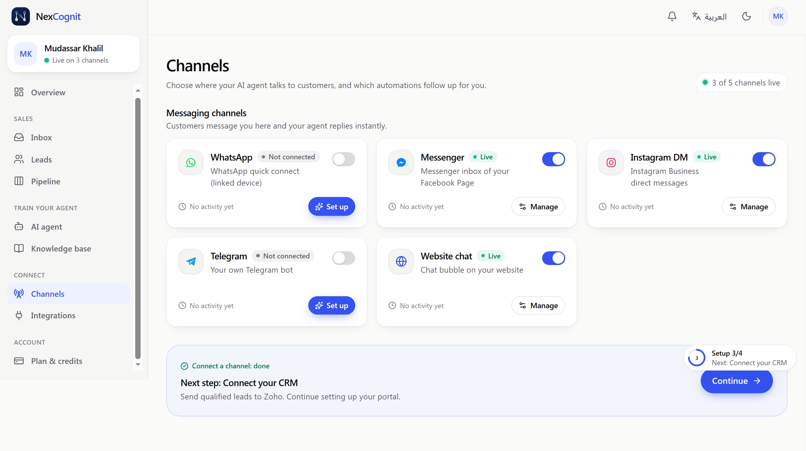

Channels
Channels are the places where your AI agent talks to customers. Connect a channel, and customers who message you there get an instant reply from your agent.
Channels overview
The top right of the page shows how many of your channels are live.

Available channels
- WhatsApp: WhatsApp quick connect, using a linked device.
- Messenger: The Messenger inbox of your Facebook Page.
- Instagram DM: Direct messages to your Instagram Business account.
- Telegram: Your own Telegram bot.
- Website chat: A chat bubble on your website.
Each channel has its own setup guide. Choose a channel from the Channels menu in the sidebar.
What each channel card shows
- Status: Live means the channel is connected and working. Not connected means it has not been set up yet.
- Switch: Turns the channel on or off.
- Activity: When the channel was last used, or "No activity yet".
- Set up: Appears on channels that are not connected. Click it to start connecting.
- Manage: Appears on connected channels. Click it to change the channel's settings.
Things to know
- You can connect more than one channel. All messages arrive in the same Inbox.
- Turning a channel's switch off stops your agent from replying there, without removing the setup.
- Connecting at least one channel completes the Connect a channel step of your setup.